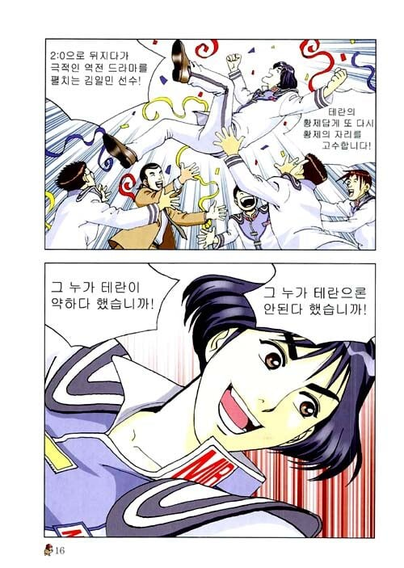

53 · 7 · 5 시간 전 · 원문

수집 당시 댓글 7개
살균소독티슈 · 4 일 전
와 즈탱이
돈많이벌고싶다 · 4 일 전
지금은 몰라도 초기 때에는 테란은 최약 종족이였지
겐지원쳄 · 4 일 전
지금도 어린 피지컬 없으니 최약체 되긴함 ㅋㅋ
10대 20대초 피지컬 있어야 사기
복날개잡듯이 · 4 일 전
저거 언덕때릴때, 타격지점이 가운데가 아니라 앞으로 쏠려서, 언덕위에 적 뭉쳐있으면 뒷놈 때리면 된다 했던거 같음
김공장 · 4 일 전
테란은 개씹사기임 그래서 나도 테란함
킴취워리오 · 4 일 전
테사기
거제굴톤파이리 · 4 일 전
언덕사기
와 즈탱이